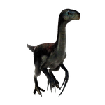

Useful Website
Therizinosaurus is a genus of herbivorous dinosaur from the therizinosaurid family that lived in Asia during the late Cretaceous period and can grow to a weight of more than 4,000kg. This genus' name translates to 'Scythe lizard', in reference to its large claws at over 50cm, Therizinosaurus is believed to have had the longest claws of any animal in existence.
